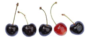

Rebecca Phillipson works as a photographer, teacher and photographic artist. Her work can be broadly divided into three categories : portraiture, teaching and fine art photography, all of which are shown on this website. In addition Rebecca is skilled at restoring and copying old photographs, which she does as part of her oxford based business.
Please use the contact page for any enquiries about portraits, restoration, tuition or purchasing fine art prints. Rebecca will be delighted to hear from you.

Courses
&w(200)&q(100)) 10 week or 20 week photography courses in Oxford and residential courses on the Isle of Wight.
10 week or 20 week photography courses in Oxford and residential courses on the Isle of Wight.Learn More >>
&w(200)&q(100)) Specialising in child, baby and family portraits.
Specialising in child, baby and family portraits.&w(200)&q(100)) Restore or copy your precious old photos.
Restore or copy your precious old photos.